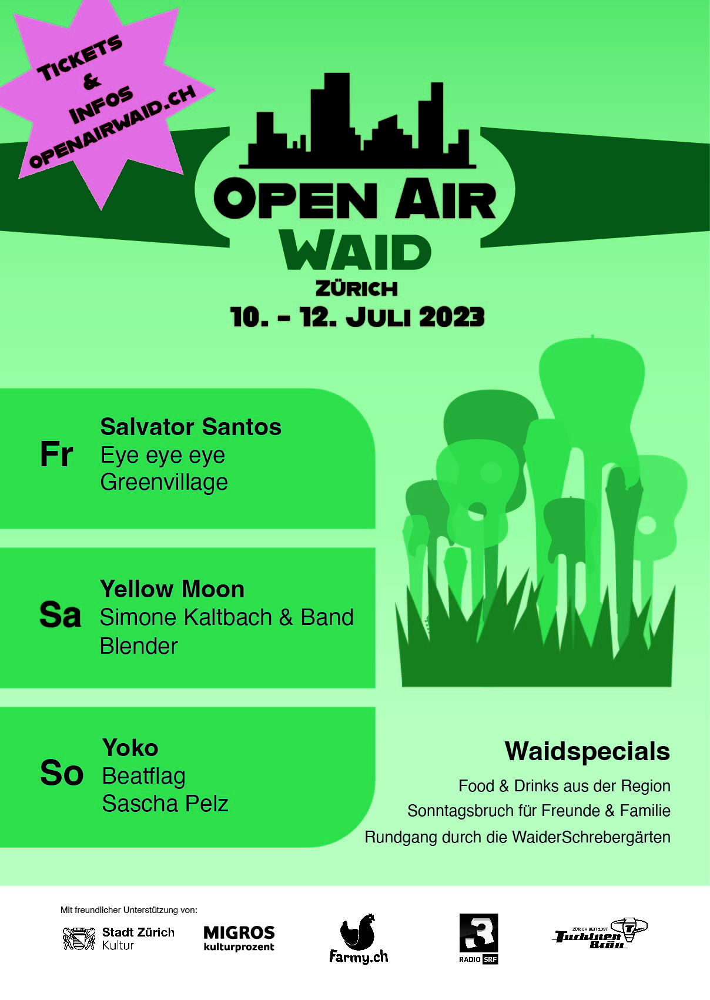
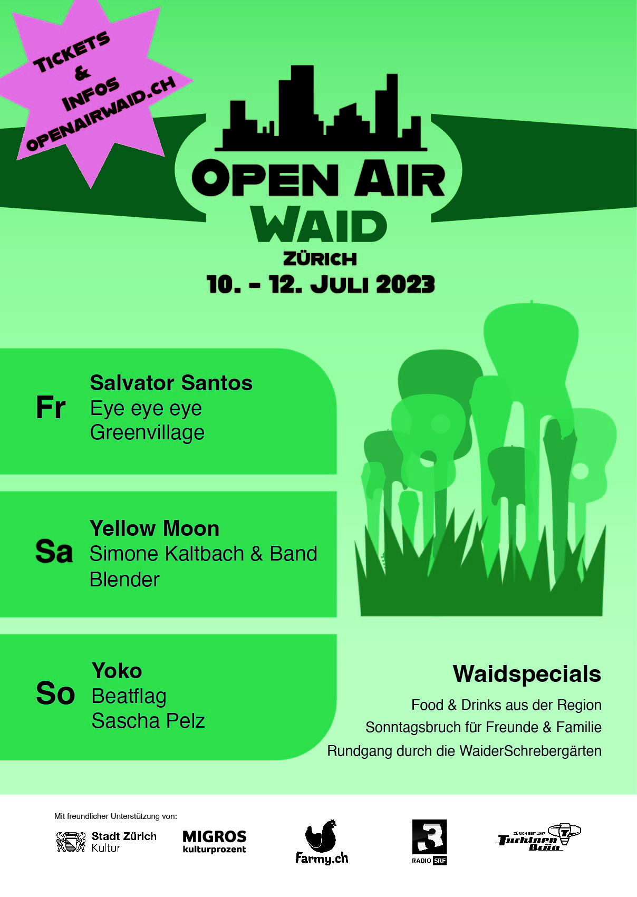

Poster Modul 272
Im ÜK im Modul 272 war der Auftrag ein Poster mit einem Logo zu gestalten zum fiktiven Open Air Wald. Dabei habe ich mit Illustrator gearbeitet.
Im ÜK im Modul 272 war der Auftrag ein Poster mit einem Logo zu gestalten zum fiktiven Open Air Wald. Dabei habe ich mit Illustrator gearbeitet.
